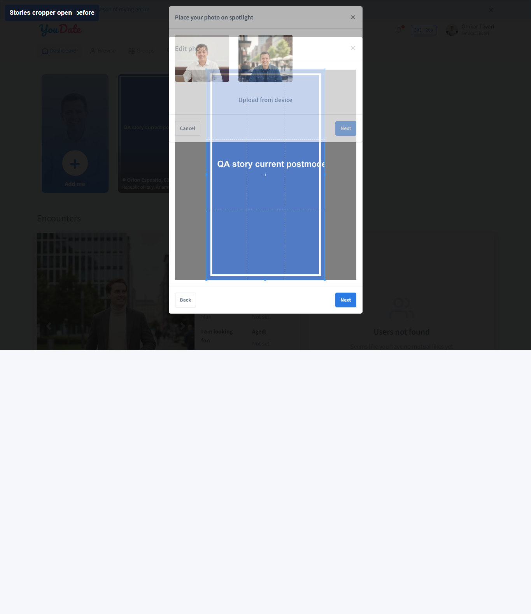
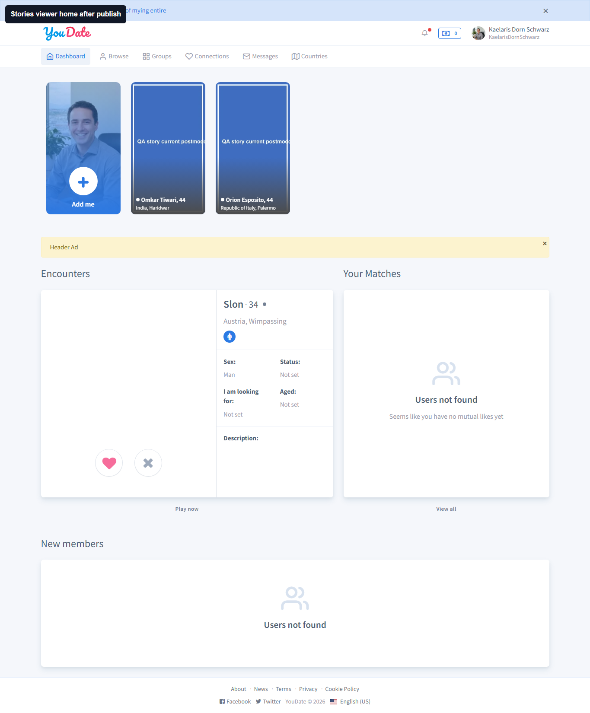

QA report · live Confideline · 2026-05-09
Stories: device upload через cropper
Актуальный честный проход после снятия тестового блокера. Проверялся не admin media queue, а пользовательский сценарий: загрузить новую картинку, обрезать ее в cropper, опубликовать story и проверить видимость у автора и второго пользователя.
Факт: текущие настройки stories: storiesOn=true, storiesModerationMode=postmoderation, allowedTimeNextStory=1.
Что снято как ограничение теста: у U184 был реальный cooldown после уже опубликованной story. Для повторного доказательства использован U182 OmkarTiwari: баланс 200, cooldown пустой, Add me открывает #spotlight-submit.
Вывод: cropper можно тестировать автоматически. Предыдущее ограничение было не в сайте и не в браузере, а в неправильном ожидании момента готовности cropper и в повторной попытке под пользователем с cooldown.
Сводка для Игоря
| Статус | Зона | Что проверялось | Факт | Как найти / воспроизвести | Куда смотреть |
|---|---|---|---|---|---|
| PASS | Stories settings | Конфигурация перед запуском. | postmoderation включен, сторис включены, лимит между публикациями равен 1 часу. |
Открыть /en/admin/settings/stories. |
#settings-onstories, #settings-storiesmoderationmode, #settings-allowedtimenextstory. |
| PASS | Device upload | Открывается ли cropper после выбора новой картинки. | Cropper открылся, window.cropEditor._cropper стал готов. |
Под U182: /en -> Add me -> загрузить JPG. |
#modal-inline-cropper, window.cropEditor._cropper. |
| PASS | Crop action | Создается ли cropped blob после кнопки Next. |
window.cropEditor._croppedBlob создан. Preview-modal визуально не обязателен для доказательства, так как blob готов и upload проходит. |
В cropper нажать Next. |
Обработчик #crop в live cropper.js. |
| PASS | Publish | Отправляется ли story на сервер. | /en/balance/spotlight-submit вернул 2xx. Баланс U182 изменился 200 -> 150. |
После crop нажать publish в preview. | Network response spotlight-submit, баланс пользователя. |
| PASS | Author visibility | Видит ли автор опубликованную story. | U182 видит карточку Omkar Tiwari в горизонтальной ленте stories. | Обновить /en под U182 после публикации. |
#pjax-spotlight-horizontal, карточка Omkar Tiwari. |
| PASS | Viewer visibility | Видит ли story другой пользователь. | U166 видит опубликованную story Omkar Tiwari в своей ленте stories. | Login-as U166, открыть /en. |
#pjax-spotlight-horizontal, карточка Omkar Tiwari. |
Доказательства

spotlight-submit успешен, баланс списался 200 -> 150.

Артефакты
Локальный JSON: H:\GPT-Codex\Confideline\qa-ba-autonomous-tester\reports\stories-device-upload-cropper-scenario-20260509-074434\stories-device-upload-cropper-scenario.json
Локальный Markdown: H:\GPT-Codex\Confideline\qa-ba-autonomous-tester\reports\stories-device-upload-cropper-scenario-20260509-074434\stories-device-upload-cropper-scenario.md
Команда: $env:STORIES_AUTHOR_ID='182'; $env:STORIES_AUTHOR_DISPLAY_NAME='Omkar Tiwari'; $env:STORIES_AUTHOR_USERNAME='OmkarTiwari'; node .\playwright\scripts\stories-device-upload-cropper-scenario-audit.mjs